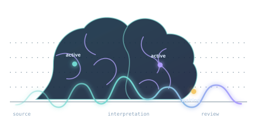
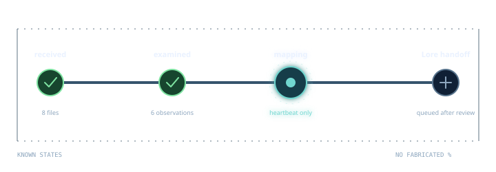

Provenance review
Confirm Astra Parser v2.4.1 source snapshot before Lore refresh.
needs reviewNOESIS / PLAN CONCEPT
WEDNESDAY · 14:32
Two open threads need a decision. Your selected resource is ready for inspection.

LOCAL SIGNAL · EVIDENCE AWAREConfirm Astra Parser v2.4.1 source snapshot before Lore refresh.
needs reviewDream job paused after provider timeout. No changes applied.
recoverableACTIVITY TRACE

Live activity is shown as stage state, not invented percent progress.
ATLAS · RESOURCES I KNOW ABOUT
Local parser for structured technical notes.
Project decisions and release handoff notes.
Saved locator exists; content has not been read.
LINEAGE · SELECTED SNAPSHOT
RECOVERY SPECIMEN · FAILED REQUEST
Your selected resource, version, and scope stay pinned. No Lore revision was written.
GET /api/lore/resource:astra-parserReasonConnection interrupted · 14:31:52COMPONENT STATES
file:///workspace/nebula/docs/decisions/2026-11-27/astro-parser-notes.mdWraps, copyable, never clipped.TAB PREVIEW
Tab switch keeps one selected-resource rail visible. Atlas owns search, filters, list/table fallback, and deep-linkable inspector.
Generated and authored blocks stay separate. Stale source claims are reviewable before refresh.
Durable job handle stays in the tab. Unknown progress uses heartbeat and stage text.
Blueprint preview carries resource, version, scope, evidence, limitations, and omissions.
RESPONSIVE CONTRACT
Desktop Three panes: section rail, task canvas, resource inspector. Focus stays in the active tab panel.
Handheld Horizontal tab strip, pinned selected context, stacked cards, inspector after task content.
Reflow Tabs scroll, actions stack, long locators wrap, no required two-dimensional canvas.
Keyboard Skip link → tabs (Arrow/Home/End) → panel heading → action order. Focus never disappears after async updates.
VISUAL BOARD
#eaf2ff#07111e#71d7d0#f4c96b#ff8f86